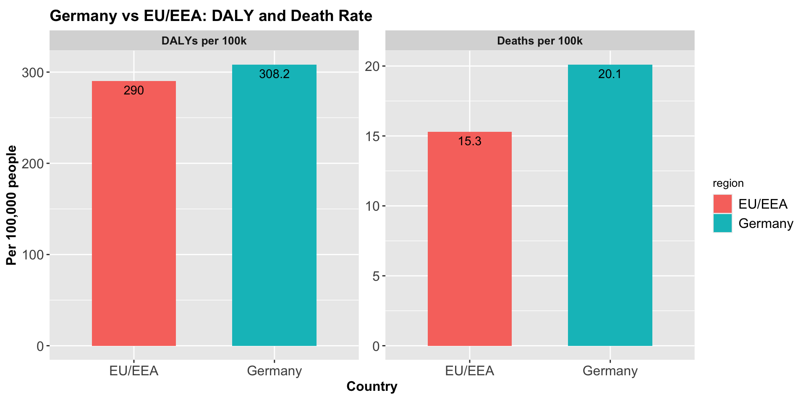

Problem
Healthcare-associated infections (HAIs) remained a major burden on hospital systems by causing long-term disability, especially in Germany. From the 2011 ECDC point-prevalence survey, enabled Germany to be analysed using a new methodology, the Burden of Healthcare-Associated Infections (BHAI) R package. This method translates prevalence into disability adjusted life years (DALYs), combining years of life lost (YLL) and years lived with disability (YLD), providing a clearer picture of population health impact.
The fundamental question is: How big is Germany’s HAI burden compared with EU/EEA average and what infection type drives it?
Data
Source: ECDC Point Prevalence Survey (PPS) 2011–2012 capturing five HAIs: Clostridioides Difficile Infection (CDI), Hospital Acquired Pneumonia (HAP), Bloodstream Infection (BSI), Urinary Tract Infection (UTI), Surgical Site Infection (SSI) with 46 hospitals and 9,626 patients in Germany and 132 hospitals and 41,539 patients for EU/EEA
Variables: Infection type, patient demographics (age,sex), and clinical outcomes such as incidence, attributable deaths, and DALYs.
Method: The method relied on converting prevalence to incidence with a modified Rhame–Sudderth model. DALYs were calculated as YLL + YLD, using infection specific probabilities of death. The analysis was performed with the BHAI R package, standardizes the workflow and makes the results reproducible. Because Germany did not report McCabe severity distributions, the numbers were substituted using EU/EEA values, causing moderate uncertainty.
Analysis
Using Germany 2011 PPS, the problem was revealed, there were 478,222 HAI cases, resulting 16,245 attributable deaths and 248,920 DALYs. Adjusted to per 100,000 population sizes, Germany carried 308.2 DALYs and 20.1 deaths. Compared with EU/EEA, the average DALYs were 290 and 15.3 attributable deaths as shown in Figure 1. This showed that Germany has higher infection burden compared to the region.
Although the number is high for Germany, the burden is not evenly distributed across infection types. UTI are the most common, representing 45% of all cases, but only accounted for 27% DALYs. In contrast, HAP and BSI together represent only 28% to total cases but contributed 51% of DALYs as shown in Figure 2 . This shows that the most severe infections are not necessarily the most frequent that happened.
The pattern is clearly summarized in Table 1 . It confirms while UTI dominate the case numerically, HAP and BSI still drive the majority of DALYs. This finding emphasize a prevention strategy should focus not only on frequent infections, but also disease that cause severe effects afterwards.
| Type of HAI | Number of HAIs | Number of attributable deaths | Number of DALYs | Number of YLLs | Number of YLDs |
|---|---|---|---|---|---|
| HAP | 106,586 (83,618–137,476) | 3,968 (1,107–8,164) | 69,508 (34,042–117,232) | 41,306 (11,475–84,483) | 27,539 (16,528–42,824) |
| SSI | 93,222 (75,369–114,241) | 2,328 (1,888–2,882) | 28,842 (23,313–35,303) | 28,376 (22,983–34,714) | 452 (352–580) |
| BSI | 26,976 (16,520–42,252) | 3,905 (2,004–6,987) | 58,350 (30,940–104,227) | 49,578 (25,499–90,816) | 8,787 (4,463–16,609) |
| UTI | 214,150 (175,086–253,524) | 3,664 (1,462–7,533) | 66,701 (27,890–128,543) | 44,871 (18,043–92,915) | 20,243 (8,095–40,522) |
| CDI | 36,002 (25,108–49,934) | 1,917 (112–4,547) | 20,890 (2,023–49,443) | 19,937 (1,166–47,973) | 977 (172–2,125) |
| All | 478,222 (421,350–537,787) | 16,245 (10,863–22,756) | 248,920 (178,693–336,239) | 190,245 (131,301–264,573) | 59,076 (40,263–84,578) |
Conclusion
This analysis shows that Germany’s HAI burden is above the EU/EEA average and also concentrated in a few key infection types, particularly pneumonia (HAP) and urinary tract infections (UTI). These infections drive the majority of DALYs and attributable deaths, suggesting that targeted prevention strategies in these areas could deliver the greatest benefits.
The findings also emphasize the importance of advanced modelling approaches such as those implemented in the BHAI R package, which was used in the original study to estimate uncertainty intervals and standardize cross-country comparisons. By combaning both deaths and long-term disability, DALYs provide a fuller picture of the public health impact than mortality rates alone.